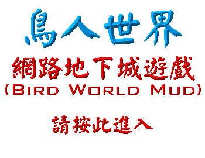

Mud 其實是 Muliti User Dungeon(多人連線網路地下城)，是一種透過網路構連的文字虛擬實境遊戲。
我國大多數 MUD 都是以 ES2 (East Store II -- 東方故事二) 的 MudLIB 為基礎並加以修改建立的，本 Mud 亦是如此改良而來。
本 Mud 架設人 --- 大鳥本身熱愛 Mud，深感國軍同志於上班之餘缺少心靈娛樂；特將本 Mud 架設於國軍網路中，供各位同志連線遊戲。